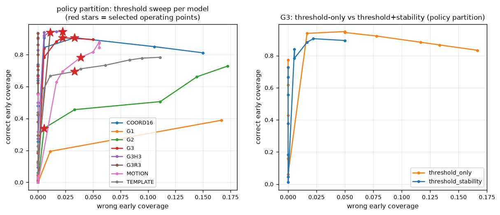

Reading a Stroke Before It Ends
7 November, 2026 · path signatures, early commitments, and what I learned by making a gesture recogniser decide before the gesture was finished · code
I first encountered path signatures while working on my bachelor's thesis. I liked the mathematics immediately: a path could be turned into a finite list of numbers without forgetting the order in which it moved. But the examples I had seen mostly began with a completed path. That left me with a more practical question. What can a signature tell us while the path is still being drawn?
Imagine drawing an arrow on a tablet. The pen moves down, then up, then begins to flatten to the right. At 175 milliseconds, only fifteen percent of the way through the stroke, the program says arrow. If it is right, the interface feels unusually responsive. If the stroke is really a caret whose opening happens to look like an arrow, the same speed becomes an irreversible mistake.
That tension became earlysig. The project has three parts: a classifier that reads a growing stroke, a policy that decides when the evidence is strong enough to commit, and an evaluation that charges the system for both wrong answers and excessive waiting. The original question about signatures quickly split into several others. Does the last quarter-second of motion contain information that the whole observed prefix smooths away? Can confidence tell a model when it is ready? And what does a 5% error target mean when only some strokes receive an early decision?
I will build the answer in the same order that made the project make sense to me: first the information available at one instant, then the representation, then the stopping rule, and finally the results. The experiment is small enough to run on a laptop, but it contains most of the awkward questions that appear whenever a model is asked to act before all the data has arrived.
Where this goes
- Two questions pretending to be one
- What the machine is allowed to see
- Signatures, without ceremony
- Eight ways to describe a partial stroke
- The questions fixed before evaluation
- How I kept the evaluation causal
- Rows, C, and temperature
- Waiting, committing, and the difference
- What actually happened
- The surprise: better halfway than at the end
- What the implementation review changed
- Where the method remains fragile
- The limits of the conclusion
- Running it yourself
- Every check the math has to pass
- Every parameter, listed
- A glossary for the tables
Two questions pretending to be one
Most gesture recognisers are trained on finished strokes. You draw the whole shape, lift the pen, and only then does the classifier see it. This is perfectly sensible until the software needs to preview a label, fire a shortcut, or switch modes while the pen is still moving. Then the model has to reason from something closer to half a sentence.
At first, early recognition sounds like a single prediction problem. In practice it contains two. The first is prediction: given the part drawn so far, which class looks most plausible? The second is stopping: is that evidence strong and stable enough to act on? A good classifier can still produce a poor system if it commits too early; a cautious policy can hide a weak classifier by waiting until the stroke is almost over.
The clean way to reason about the system is therefore to keep the classifier and the policy separate. The classifier produces a probability trace over time. The policy consumes that trace and either waits or makes one irreversible commitment. Once I wrote the problem this way, the evaluation also became clearer: every metric had to state exactly which strokes appeared in its denominator.
Scope is deliberately narrow. One stroke at a time. Closed set of classes. Known pointer-down start, pointer-up finish. No continuous spotting, no multistroke gestures, no rejecting unknown classes, no learning online. Every one of those is its own project, and every one of them matters for the claims I make here.

What the machine is allowed to see
Before choosing a model, I had to decide what counted as a fair input. At query time \(q\), measured in milliseconds since the pen went down, the model receives exactly the points with \(t_i \le q\). It does not receive the final duration, the final point count, the true progress fraction, the writer, the label, or a future coordinate. The fraction \(q/T\) is computed only after prediction, when it is time to draw evaluation curves.
The rule sounds obvious, but preprocessing creates several easy ways to violate it. A scale
computed from the completed gesture, or a full path resampled before it is cropped, leaks the
future without ever placing a future coordinate directly in the feature vector. To make the
boundary explicit, the feature extractor accepts a PrefixView that cannot contain
the rest of the stroke. A causality test rewrites the entire future and checks that every
earlier feature vector remains identical.

Two further rules follow from this constraint. First, at every query the visible prefix is moved so its first point sits at the origin, then divided by one number: \(s=\max(\text{range}_x,\text{range}_y)\), computed over the visible prefix only. One scale, not separate x and y scales, and no rotating the stroke to some "indicative angle" of the completed gesture. Second, \(s\) changes as the stroke grows, so the normalised historical coordinates change with it. A signature computed at 300 ms cannot simply be extended at 600 ms under the new scale. The implementation therefore recomputes the signature from the currently visible, currently normalised prefix at every tick.

Signatures, without ceremony
I give the longer mathematical treatment in The Geometric Trace. For this project, the essential idea is that a signature is a fixed-size summary of a curve that remembers order. For a 2D path, level 1 is the total displacement. Level 2 gives four terms, \(xx, xy, yx, yy\), whose antisymmetric component \((xy-yx)/2\) is the signed area swept by the path. Level 3 adds eight ordered triples. Levels 1 through 3 together produce fourteen numbers.
A recorded stroke is a polyline, which makes the computation pleasantly concrete. Its signature can be evaluated exactly, segment by segment, using the truncated Chen product. For one increment \(v\):
\[ S^{(1)} \leftarrow S^{(1)} + v, \qquad S^{(2)} \leftarrow S^{(2)} + S^{(1)}_{\text{old}} \otimes v + \frac{v \otimes v}{2}, \] \[ S^{(3)} \leftarrow S^{(3)} + S^{(2)}_{\text{old}} \otimes v + \frac{S^{(1)}_{\text{old}} \otimes v \otimes v}{2} + \frac{v \otimes v \otimes v}{6}. \]
Every right-hand side uses the old values, so the implementation updates levels in descending order. I checked the result against examples with closed-form answers: a right-angle path, the signed area of a closed square, the shuffle identity, subdivision invariance, and the rule that level \(k\) scales by \(\alpha^k\). These examples catch ordering and factorial errors without depending on a second copy of the same recurrence.

Why should anyone who studies early recognition care about ordered geometry? Because of one fact about shapes that sounds like a joke until it bites. A circle, a rectangle and a triangle all end near where they started. Displacement, the cheapest feature there is, therefore says "nothing happened" about three shapes that clearly happened. Early in the stroke it is useful. At the end it is a polite fiction. You will see this as the sharpest curve in the whole project.

Eight ways to describe a partial stroke
A result about signatures means little without sensible alternatives. I therefore used eight representations with the same classifier family and the same model-selection budget. Each one isolates a different explanation for any improvement: more geometry, more coordinates, an extra temporal view, or a simple nearest-template comparison.
MOTION: twelve conventional geometric features
MOTION is the control with no signature in it. Normalised displacement. Arc length. A straightness score. Width and height of the bounding box. The last direction that actually moved. Cumulative signed and absolute turning. A circularity proxy. And the recent arc length divided by the total. Every denominator is guarded and every quantity is computed from the observed prefix. This baseline asks whether ordinary geometry already contains the useful signal.

COORD16: coordinates without future leakage
COORD16 keeps sixteen positions, spaced evenly along arc length. The interesting part is the order of operations matters: crop to the visible prefix first, then resample. Resampling the completed stroke and truncating afterwards would let the early representation depend on curvature that has not yet been drawn. A regression test fixes this order explicitly.

G1, G2, G3: the depth ladder
Then the signatures themselves. Depth 1 is two numbers, depth 2 is six, depth 3 is fourteen. These form the depth ladder for the first hypothesis. G3 is richer than G1, so a raw comparison could confuse ordered geometry with feature count. COORD16, with thirty-two coordinates, and MOTION, with twelve hand-built quantities, help separate those explanations.

G3R3 and G3H3: the bet and its control
This pair contains the main experiment. G3R3 is G3 plus the depth 3 signature of just the last 250 ms. G3H3 is G3 plus the depth 3 signature of the first half of elapsed time, the \([0, q/2]\) window. Same size, 28 features. Same classifier. The only difference is which extra slice of history the model receives. If recent motion contains information that the accumulated global signature obscures, G3R3 should improve. If any second view helps, the historical control should do just as well. This matched control is what makes a specific claim about recency possible.


The window rules deserve a careful paragraph. The recent window's lower edge can interpolate between two samples you have already seen. Its upper edge \(q\) never interpolates, because that would need a future sample. Both branches reuse the global scale \(s\). A window with no motion returns zero spatial features. During a pause the window can shrink or empty while the clock keeps going. These details determine whether the window remains causal.

TEMPLATE: a deliberately simple neighbour
Last one is non parametric. Store a capped, deterministic selection of training prefixes per class. Resample them exactly like COORD16. Score a query by its nearest neighbour per class, with a softmax scale fitted on the development writers. It is not a faithful copy of the full stroke $1 algorithm; it is a causal prefix-template baseline. Nearest-neighbour methods are strong on small shape datasets, so excluding one would make the comparison less informative.

The questions fixed before evaluation
Before evaluating on the test writers, I fixed three hypotheses and one policy target. This matters because the same results can support many attractive stories after the fact.
- H1, ordered geometry helps. Depth 2 and 3 should beat depth 1 once the classes have diverged, and the non signature baselines should not run away with it.
- H2, recent history helps earlier. G3R3 should give higher correct early coverage or earlier correct commitments than G3, without a worse error to coverage trade. The matched G3H3 exists to falsify the recency story.
- H3, abstention is useful. A threshold and stability policy should reduce wrong early commitments compared to committing at the first eligible prediction, at a measurable cost in coverage and delay.
The target was empirical selective error at most 5% on the policy writers, with enough commitments to make the number mean something. That is a tuning target, not a promise about the future, and the results make that distinction concrete.
How I kept the evaluation causal
The classifier itself is intentionally ordinary: a weighted StandardScaler
followed by multinomial logistic regression for all eight representations. Most of the work
lies in making the comparison mean what it appears to mean. I treated that as three separate
problems.
A dataset where leakage is visible
If two classes share a prefix, the model must not be able to tell them apart before they
diverge. So I built a synthetic set where the check is mechanical. Three labels,
turn_up, turn_down and loop, share a byte identical
prefix and identical timestamps until a branch point at 25% of the duration. Inside a family,
translation, scale, rotation, duration and prefix noise are all shared. Before the branch, the
three siblings have to receive identical probabilities. Any systematic advantage before the
branch would reveal leakage rather than successful learning.


The synthetic set has a second job. It is the only place where I know the truth about information availability. Before the branch, the answer is genuinely unknowable, so no accuracy number there can be luck. When a model hits 1.0 balanced accuracy on finished synthetic strokes and 0.33 before the branch, those two numbers bracket exactly what the data can support.
A public benchmark that keeps writers apart
The public data is the University of Washington $1 unistroke corpus, the logs from the original 2007 recogniser. 5,280 XML recordings from ten writers. I verify the archive by size and SHA-256 before using it, and an audit checks thirteen facts every time: the 480 recording pilot folder, 4,800 standard recordings, ten writers with 480 each, sixteen classes with 300 each, three speeds with 1,600 each, no broken timestamps, no repeated adjacent points, no point count mismatches, and the folder id agreeing with the subject attribute in every file.

Six of those classes, arrow, caret, check, circle, rectangle, triangle, give 1,800
strokes. Splits are writer disjoint. Five outer folds rotate the writers
\([2,\dots,11]\) left by two per fold: first five train, then one writer each for development,
calibration and policy selection, last two test. Every writer is tested exactly once across
the folds, so pooling gives 1,800 out of fold test strokes per model with nobody appearing on
both sides.

Why am I so insistent on this. With random stroke splits, the same writer's quirks show up in training and testing, and a model that memorised handwriting looks like a model that recognises gestures. With one held out writer, which I tried first, the numbers swing so hard that a policy that looks fine on Monday disappears on Tuesday. Ten writers, five folds, and uncertainty computed over writers. That is the minimum I would trust.
Separate writers for each tuning decision
Thresholds are chosen on the policy writers. Test writers remain untouched until regularisation, temperature, and threshold are frozen. If no threshold reaches the target, the early-commit policy is disabled and the run records the target as infeasible. This keeps the risk target fixed even when the resulting table is less flattering.
Rows, C, and temperature
With the data partitions fixed, three quieter choices determine how the model is trained.
Rows and weights. Every training stroke gives at most twelve prefix states, picked from the 25 ms grid with the completed stroke always included and states strictly after \(t=0\). A stroke that gives \(K\) rows gives each of them weight \(1/K\), so every stroke has equal total weight and long recordings cannot dominate the model. Feature rows are cached per model and reused across the three values of \(C\), so model selection does not redo signature extraction three times.
Choosing C. Regularisation is selected on the development writers by mean balanced accuracy over the fraction grid \(\{0.1,\dots,1.0\}\). For a given fraction, the prediction used is the one from the latest query grid tick at or before it. Same rule offline replay uses, so evaluation never reads a prediction the online system could not have made. This makes the development curve correspond to predictions the online system could actually have produced.
Temperature. After \(C\) is frozen, one temperature per model is fitted on the calibration writers by bounded scalar minimisation of the stroke weighted negative log likelihood. Temperature changes confidence, never the class order. Without it, every threshold is being compared against a confidence scale the model invented for itself.
Waiting, committing, and the difference
The policy is a small state machine. It waits, tracks a candidate, and either commits or returns to waiting. To commit it requires five things at once: at least 75 ms gone by, at least eight distinct observed points counted with a scale relative tolerance, the same winning class above \(\theta\) for at least 100 ms, at least three ticks in that window, and at least three ticks with genuinely new movement. That last gate exists because of pauses. Without it a user who holds still long enough earns a commitment by inertia, and heartbeats count as evidence. One commitment, ever. A commitment exactly at the stroke's end is labelled final-only. A stroke that ends without one gets a separate final prediction, and that never counts as early.

This creates an accounting question. If the policy waits and the final fallback is correct, has the system succeeded or merely postponed the decision? I report both sides. Coverage is the fraction of strokes that received an early commitment. Selective error is the fraction of those commitments that were wrong, and it is undefined rather than zero when there were none. A method that never commits has no measured selective error; it has not achieved perfect early accuracy. Deployed accuracy gives a wait its fallback chance but charges for the wait through the effective decision fraction: \(q/T\) if committed, a full 1.0 if not. Together, coverage, error, and delay prevent a system that waits on every difficult stroke from looking artificially strong.

Uncertainty follows the same logic. Repeated prefixes from one writer are not independent trials, so the bootstrap resamples whole writers, a thousand draws, families for synthetic data. With fewer than three clusters a population interval is not estimable, and the code returns a labelled stroke level interval, conditional on the observed writers, instead of printing a population estimate that the data cannot support.
What actually happened
Everything below is from the five fold, writer disjoint evaluation: 1,800 out of fold test strokes per model, every writer tested once, and participant-cluster intervals from a thousand bootstrap draws. I will start with the aggregate table and then unpack the comparisons that answer the three hypotheses.
| model | commits | coverage | selective error [95% CI] | correct cov. | deployed acc. | mean eff. frac. | final acc. |
|---|---|---|---|---|---|---|---|
| G1 | 164 | 0.091 | 0.049 [0.000, 0.115] | 0.087 | 0.284 | 0.927 | 0.236 |
| G2 | 1185 | 0.658 | 0.095 [0.024, 0.172] | 0.596 | 0.818 | 0.594 | 0.603 |
| G3 | 1700 | 0.944 | 0.048 [0.019, 0.084] | 0.899 | 0.941 | 0.346 | 0.839 |
| G3R3 | 1419 | 0.788 | 0.044 [0.023, 0.068] | 0.753 | 0.952 | 0.439 | 0.871 |
| G3H3 | 1725 | 0.958 | 0.021 [0.006, 0.039] | 0.938 | 0.975 | 0.386 | 0.954 |
| MOTION | 1161 | 0.645 | 0.043 [0.023, 0.065] | 0.617 | 0.852 | 0.606 | 0.714 |
| COORD16 | 1712 | 0.951 | 0.060 [0.027, 0.096] | 0.894 | 0.933 | 0.399 | 0.947 |
| TEMPLATE | 1474 | 0.819 | 0.022 [0.006, 0.046] | 0.801 | 0.956 | 0.575 | 0.938 |
Consider G3H3 first. It commits before completion on 95.8% of strokes, and 2.1% of those commitments are wrong. It makes 1,725 early decisions and 1,688 of them are correct. Including fallbacks it is right on 97.5% of everything. Its completion time prediction, which is a different thing entirely, reaches 95.4% balanced accuracy. At the other end, G1 produces a feasible policy in only two of five folds, and a final accuracy of 0.236, far below what it knows halfway through.
The aggregate hides substantial variation between folds, so the next table shows coverage and selective error separately for each one.
| model | fold 0 | fold 1 | fold 2 | fold 3 | fold 4 |
|---|---|---|---|---|---|
| G1 | 0.00 / n/a | 0.00 / n/a | 0.32 / 0.043 | 0.14 / 0.061 | 0.00 / n/a |
| G3 | 0.97 / 0.040 | 0.95 / 0.009 | 1.00 / 0.122 | 0.85 / 0.003 | 0.95 / 0.056 |
| G3R3 | 0.96 / 0.046 | 0.99 / 0.011 | 1.00 / 0.081 | 0.99 / 0.039 | 0.00 / n/a |
| G3H3 | 0.99 / 0.045 | 0.98 / 0.008 | 0.99 / 0.042 | 0.93 / 0.000 | 0.90 / 0.006 |
Coverage and selective error per fold. The dashes mean the policy was infeasible on that writer's policy partition, so early commitment was switched off instead of changing the target. Two observations matter here. Writer difficulty varies enormously, and G3's fold 2 error is forty times its fold 3 error. A policy partition containing one writer is also a fragile place to select a threshold. The selected operating point depends strongly on which writer occupies that role.
Why signature depth matters
The first hypothesis has a clear answer. On paired forced predictions over late fractions, G3 beats G1 by +0.565 with a 95% interval of [0.520, 0.605]. In deployment terms that is 81 points more correct early coverage, 66 points more deployed accuracy, and 58 points of stroke earlier commitment. G2 sits right between them, which is what you want a ladder to do.

G1 is genuinely useful early, reaching 0.675 at a quarter of the stroke, and then becomes less informative as the path closes. Its geometry says only that the pen returned near its starting point, which is true for circles, rectangles, and triangles alike. The higher signature levels preserve what happened between those endpoints.
There is a second result hiding in the same figure. The 32 dimensional COORD16 baseline is nearly matched by 14 dimensional G3 at the halfway point, 0.938 against 0.918. This suggests that the depth 3 gain is not merely a consequence of adding coordinates: a compact structured representation competes with a larger unstructured one.
For the record keepers, the same result as numbers. Forced balanced accuracy at 25, 50, 75 and 100 percent progress, pooled out of fold over all ten writers.
| model | 25% | 50% | 75% | 100% |
|---|---|---|---|---|
| G1 | 0.675 | 0.449 | 0.309 | 0.236 |
| G2 | 0.774 | 0.829 | 0.741 | 0.603 |
| G3 | 0.889 | 0.918 | 0.931 | 0.839 |
| G3R3 | 0.902 | 0.913 | 0.928 | 0.871 |
| G3H3 | 0.897 | 0.963 | 0.968 | 0.954 |
| MOTION | 0.826 | 0.819 | 0.848 | 0.714 |
| COORD16 | 0.855 | 0.938 | 0.955 | 0.947 |
| TEMPLATE | 0.816 | 0.934 | 0.944 | 0.938 |
The recent window did not win
The matched control changes the interpretation of the main experiment. On the public data the recent window model is statistically indistinguishable from plain G3: correct coverage difference −0.146 with interval [−0.417, +0.051], wrong coverage −0.010 [−0.034, +0.013], timing +0.094 [−0.043, +0.276]. Every interval straddles zero. Meanwhile the historical control, G3H3, improves correctness (+0.039 [0.015, 0.063]) and reduces wrong coverage (−0.025 [−0.051, −0.004]) at the same time.
It would be easy to turn this into the claim that recency is useless. The synthetic families show why that would be too strong. There, the label lives only in the last quarter second, and the recent window does help: 12.8 points more correct coverage and almost fifteen points of stroke earlier, for a small 1.7 point error cost. So the conclusion has to survive both datasets. An extra signature branch helps. What that branch should contain depends on the data, and on this corpus it is the opening, not the tail, that carries the extra information.
This brings the result back to arrow and caret, the pair from the beginning. What separates them early is the opening direction. The historical half sees it directly. The recent tail, by the time decisions are being made, has already blurred it. The control did not just falsify a hypothesis. It told me where the real signal lived.

The synthetic set tells a slightly different story, so it deserves its own scoreboard. Selected policy results on its test partition, 180 strokes from 60 families, with family cluster intervals.
| model | commits | coverage | selective error | correct coverage | deployed acc. |
|---|---|---|---|---|---|
| G1 | 140 | 0.778 | 0.000 | 0.778 | 1.000 |
| G2 | 160 | 0.889 | 0.025 | 0.867 | 0.978 |
| G3 | 142 | 0.789 | 0.000 | 0.789 | 1.000 |
| G3R3 | 168 | 0.933 | 0.018 | 0.917 | 0.983 |
| G3H3 | 180 | 1.000 | 0.044 | 0.956 | 0.956 |
| TEMPLATE | 180 | 1.000 | 0.022 | 0.978 | 0.978 |
Two things stand out. G1 recovers dramatically here, because the synthetic suffixes are learnable from displacement alone, which is exactly why this set is a diagnostic and not evidence. And the policy dynamics are different from the public set. On shared prefixes, correct coverage jumps the moment the branch passes, so coverage is cheap and error is the whole game. The synthetic set is where I learned to trust the leakage check and stopped trusting the accuracy number.
Abstention is worth it, and it is not free
Commit at the first eligible tick and you commit on everything. On the synthetic set, where the prefix is shared, that policy has a 66.7% selective error. On the public set it is 14.7%. A confidence threshold alone recovers almost all of the accuracy. Adding the 100 ms stability requirement buys insurance.
| stopping rule (G3R3) | coverage | selective error | mean decision fraction |
|---|---|---|---|
| immediate first eligible | 1.000 | 0.147 | 0.141 |
| confidence threshold only | 0.984 | 0.039 | 0.307 |
| threshold + stability | 0.788 | 0.044 | 0.439 |
Stability against immediate removes 11.2 points of wrong early coverage, interval −16.3 to −6.8 points, and costs 21 points of coverage. Against threshold only it is statistically identical on error. For G3 it even commits on 12.6 points more coverage at equal error, and in two of five folds it is the only variant that meets the risk target at all. The resulting hierarchy is fairly clear: thresholding does most of the work, while the stability window provides additional protection in the folds where confidence alone is insufficient.

The specific ways it fails in practice
On fold 0, G3R3 committed early on 95.8% of strokes with a 4.6% selective error. All sixteen wrong commitments were the same mistake: arrow read as caret, at 175 to 200 ms, before the disambiguating bend. Thirteen of the sixteen came from one writer's fast and medium trials. Waiting helps the strokes it refuses to call. Several of those had a wrong final fallback anyway, so patience was not going to fix that particular quirk of handwriting. The earliest correct decisions are the mirror image. Three slow condition arrow trials were called correctly at 175 ms, fifteen percent of the stroke, which is the entire reason this project exists.

The surprise: better halfway than at the end
The most useful unexpected result appears at completion. The protocol trains one classifier on prefixes sampled across the whole stroke, early, middle and finished. On public fold 0 the pooled model scores 0.975 balanced accuracy at the halfway point and 0.811 at completion.

The three curves separate representation from training protocol. The pooled model is excellent in the middle and weaker at the finish. A model trained only on finished strokes reaches 0.944, nearly as good at the end as the pooled model was at its peak. A model trained only on halfway prefixes forgets how strokes end, 0.189 at completion. So pooled training is not "the model". It is a trade. It borrows accuracy from the end to pay for accuracy in the middle, and since the fallback prediction uses the completed prefix, that trade-off affects the final fallback as well as the early predictions.
The late errors are not noise spread evenly across classes. They are two specific confusions. Completed arrows read as carets, 29 out of 60. Completed triangles read as circles, 32 out of 60. And here the historical branch looks almost clairvoyant. G3H3 gets only 4 and 2 of those sixty wrong. Whatever the opening of the stroke encodes, it encodes a startling amount about the ending.


The interpretation is that the pooled classifier learns progress-specific cues, and some of them invert at completion. That is a property of the training protocol, not of the representation, and the completion only fit proves the representation has the information. Per stage heads or stage-aware weighting are the obvious follow-up. They remain outside this experiment because they change the registered training protocol.
Robustness: what actually breaks it

The stress tests run with the frozen fold 0 model and no retraining, because the question is what happens to this system under shift, not what a better trained system could do. Deleting up to 30% of interior points barely moves anything, 4.6% selective error unchanged, because the reconstructed polyline on these smooth strokes stays close to the original. I explicitly do not claim robustness to arbitrary point deletion. Coordinate noise at 5% of path scale pushes selective error from 4.6% to 15.7%, and compressing every timestamp by a quarter does similar damage. That makes sense once you remember the recent window is a fixed number of milliseconds, so squeezing time changes what a window contains. Inserted pauses are harmless, more ticks, more evidence. And fast strokes are the hardest condition, 11.4% selective error against 0.8% on slow. A fixed millisecond window does not fully absorb speed, and I think that is a genuinely open problem rather than a tuning knob.
| variant | n | commits | coverage | selective error |
|---|---|---|---|---|
| clean | 360 | 345 | 0.958 | 0.046 |
| timestamps ×1.5 | 360 | 358 | 0.994 | 0.028 |
| timestamps ×0.75 | 360 | 312 | 0.867 | 0.087 |
| dropout 10% / 30% | 360 | 346 | 0.961 | 0.046 |
| coordinate noise 2% / 5% | 360 | 341 / 299 | 0.947 / 0.831 | 0.079 / 0.157 |
| inserted pauses | 360 | 355 | 0.986 | 0.051 |
| speed = fast / medium / slow | 120 each | 105 / 120 / 120 | 0.875 / 1.000 / 1.000 | 0.114 / 0.025 / 0.008 |
Calibration and computational cost

Temperature was an interior optimum for all eight models and it improved every one. The biggest gaps between confidence and accuracy belonged to the overconfident models, TEMPLATE and G2. The full calibration table, fold 0, 2,152 stroke weighted rows.
| model | temperature | NLL before | NLL after | weighted Brier | weighted ECE |
|---|---|---|---|---|---|
| MOTION | 1.401 | 0.702 | 0.671 | 0.307 | 0.081 |
| COORD16 | 1.838 | 0.688 | 0.596 | 0.272 | 0.071 |
| G1 | 0.783 | 1.232 | 1.219 | 0.639 | 0.074 |
| G2 | 1.897 | 1.015 | 0.907 | 0.453 | 0.157 |
| G3 | 1.500 | 0.604 | 0.560 | 0.255 | 0.055 |
| G3R3 | 1.651 | 0.597 | 0.528 | 0.248 | 0.037 |
| G3H3 | 1.411 | 0.489 | 0.461 | 0.197 | 0.036 |
| TEMPLATE | 2.946 | 1.085 | 0.692 | 0.305 | 0.123 |
The computational numbers are encouraging. Latency for G3R3, which is prefix extraction plus features plus calibrated prediction, is 0.83 ms mean and 1.31 ms p95 per live update against a 50 ms budget. Peak memory is 130 to 165 MB. No GPU, no cloud, no compiled signature library. The browser demo commits on live drawing, replays held out examples through the same API, records labelled strokes, and shows the commitment marker landing on the path at 175 to 350 ms.
What the implementation review changed
Before freezing the results, I reviewed the implementation line by line and found fourteen defects. After fixing them, I reran the affected experiments, so the numbers on this page come from the corrected pipeline. Three examples show why end-to-end checks mattered as much as the mathematical tests.
The vertical lie. The browser captured canvas coordinates with y pointing down. The model expected y pointing up. Every hand drawn arrow reached the classifier as an anti arrow. For a representation whose whole point is preserving orientation, that is not cosmetic. Because the offline evaluation used correctly oriented data, only an end-to-end comparison with live drawing exposed the mismatch.
The disappearing final point. If the pen stopped at an off grid timestamp, say 113 ms instead of a multiple of 25, the API's completion tick never processed it. And pointer up could race an in flight batch and lose the last observations entirely. Two points in, one point seen. Offline replay used the exact grid, so the evaluation did not reveal the mismatch. The fix made the exact completion instant a first class tick and made pointer up drain everything before finishing.
The threshold that only existed on paper. The registered floor asks for thirty early commitments on the policy partition. One fold's partition could not supply them, and my first implementation quietly capped the floor to the partition size, turning an infeasible target into a "feasible" one. That is exactly what the protocol forbids, and correcting it made the results less flattering and more meaningful. The infeasible folds now report disabled policies and dashes in the table above.
The remaining defects were distributed across the pipeline: fold aggregation that did not verify writer disjointness; synthetic robustness perturbations that were not family shared, breaking the leakage invariant they were supposed to preserve. The first hypothesis being labelled from policy dependent evidence instead of the forced predictions I registered. A first eligible policy that could not commit on its first eligible tick. Point count gates that depended on raw coordinate units, so the same geometry at two scales counted as one point or eight. Cached data archives that were not re-verified on reuse. Forced curves that did not use the replay grid. API batches that mutated before validation. Per fold model bundles overwriting one another. Each now has a regression test, turning the review into a permanent part of the implementation rather than a one-time correction.
Where the method remains fragile
- Threshold fragility. Pick a different policy writer and the 5% target can become infeasible, three of five folds for one model and one of five for another. Real deployment needs pooled policy validation, per class thresholds, or an explicit abstention budget.
- Stage sensitivity. Completion time accuracy lags mid stroke accuracy by 8 to 16 points for the pooled models. Per stage heads would probably fix it, but that changes the registered protocol, so it is a follow up.
- Closed set. There is no "none of the above". An unknown gesture gets confidently mapped to the nearest class, which is the wrong failure mode for a production UI.
- Ten writers, one device. Mouse input is a domain shift from tablet strokes, and the app says so on the tin.
- Sequential error. A 5% empirical selective error is not a sequential guarantee. Users interact one stroke at a time, and a calibrated 0.95 is not a promise that ninety five of the next hundred commitments will be right.
- The template baseline. It sits close behind the signatures and it is far simpler. Any argument for signatures has to explain why they are worth the extra machinery. On this data, the honest answer is the error rate and the late stage accuracy, not the concept.
The limits of the conclusion
It does not say signatures are magic. Depth 1 to depth 3 is a large, real jump, the sharpest curve in the project, but the synthetic suffixes are simple enough that displacement nearly suffices there. The public data is the honest test, and there the setting is six classes, ten writers, and small strokes.
It does not say the recent window is useless. It says that on this corpus the extra branch helps and recency specifically does not, and that the matched control is what separates those two claims.
It also does not say the 5% target is a property of the method rather than of these ten writers. It says that the measured error of early commitments, the coverage cost of keeping that error low, and the remaining failures are all recorded and reproducible. A different device, writer population, or gesture vocabulary may produce a different answer.
Running it yourself
uv python install 3.12
uv venv --python 3.12 && source .venv/bin/activate
uv pip install -e ".[dev]"
earlysig doctor
python -m pytest -q # 53 tests
earlysig data synthetic --config configs/smoke.yaml
earlysig run --config configs/smoke.yaml
earlysig run --config configs/synthetic.yaml
earlysig data dollar --download # verifies size + SHA-256
earlysig data audit --dataset dollar
earlysig run --config configs/dollar6.yaml --all-folds
earlysig aggregate --runs reports/runs/BASE_DIR
earlysig serve --bundle BUNDLE --port 8000
Every run directory is immutable and holds the resolved config, environment and source
digests, the dataset audit and split manifest, model selection and calibration tables, policy
sweeps, per stroke commitments, comparisons, dense prediction traces, figures, and a
generated report. The five fold public run is
20261106-164925-dollar6-f323a05c333b2727 and the served bundle is
G3R3-f323a05c333b2727-aa8f4f48-fold0.joblib. I ran everything on a MacBook Air,
arm64, 16 GB of RAM, Python 3.12.15, NumPy 2.5.4, SciPy 1.18.1, scikit-learn 1.9.1. Exact
pins are in requirements.lock. Every figure on this page is regenerated from the
run artifacts by scripts/make_report_figures.py, and the fifty three tests cover
the signature algebra, causality, splits, the policy, replay and API parity, and the four bugs
I least want to meet a second time.
Every check the math has to pass
A signature implementation should not be tested only against another copy of its own recurrence; both versions can preserve the same factor or ordering mistake. The backend is therefore pinned to closed-form values that can be checked independently. Every item below is a test in the repository.
- Single segment. For one increment \(v\), level \(k\) equals \(v^{\otimes k}/k!\). Level 2 is \(vv^{\top}/2\).
- Right angle. For the path \((0,0)\to(1,0)\to(1,1)\), you should get \(S^{(1)}=(1,1)\), \(S^{(2)}=(0.5,\,1,\,0,\,0.5)\), and \(S^{(3)}=(1/6,\,0.5,\,0,\,0.5,\,0,\,0,\,0,\,1/6)\). Get the level 2 order wrong and half those numbers move. Get the half factors wrong and all of them do.
- Closed square. Displacement is exactly zero, and the antisymmetric area \((S_{xy}-S_{yx})/2\) has magnitude 1 with the sign following the traversal direction, positive counter clockwise in y up coordinates.
- Boring transformations. Translation changes nothing. Isotropic scaling by \(\alpha\) multiplies level \(k\) by \(\alpha^k\). Subdividing a straight segment into collinear pieces changes nothing. Inserting repeated identical points changes nothing.
- Algebra. The shuffle identity \(S_i S_j = S_{ij} + S_{ji}\) holds at level 2, and the Chen product of the two halves of a path equals the signature of the whole. That one is checked against an independently written tensor product, not the production code.
- Incremental versus batch. Signatures accumulated over growing prefixes agree with one shot computation on the final path.
All of these pass at \(10^{-12}\) where the value is exact. The right angle check is the one that caught bugs during development. The closed square area is the one that keeps the orientation convention honest.
Every parameter, listed
The targets were fixed before the results, so the main choices are collected here in one place.
| parameter | value |
|---|---|
| query grid | 25 ms, fixed, relative to pointer-down |
| recent window | [max(0, q − 250 ms), q] |
| historical control | [0, q/2] |
| training rows per stroke | at most 12, completion always included, states strictly after t = 0 |
| row weights | 1/K per row, so every stroke has equal total weight |
| C grid | {0.1, 1, 10}, lbfgs, max 1,000 iterations |
| development fractions | {0.1, 0.2, 0.3, 0.4, 0.5, 0.6, 0.75, 0.9, 1.0}, latest grid tick at or before the fraction |
| calibration bounds | log temperature in [−3, 3], practical bound tolerance 1e−3 |
| policy gates | at least 75 ms, at least 8 distinct points, same winner at least θ for 100 ms, at least 3 ticks, at least 3 new movements |
| movement tolerance | 1e−3 in observed-prefix normalized units |
| threshold grid | {0.50, 0.55, …, 0.95, 0.975, 0.99} |
| risk target | selective error at most 5% with at least 30 commitments on the policy writers |
| uncertainty | 1,000 participant-cluster bootstrap draws, conditional stroke interval below 3 clusters |
| seed | 20261106 |
One footnote to the footnote. The tiny smoke profile keeps every rule above, but its six stroke policy partition cannot supply the thirty commitments the floor asks for. It reports the policy as infeasible, on purpose. The alternative, capping the floor to whatever the partition can give, is the kind of quiet protocol edit that turns a benchmark into a press release.
A glossary for the tables
The results depend on a small set of related quantities. Here they are in one place.
| term | meaning |
|---|---|
| commitment | an irreversible early decision made before the stroke completes |
| early vs final-only | a commitment counts as early only if it is strictly before completion. One made at the final instant is annotated final-only and never counts as early. |
| coverage | committed strokes divided by all test strokes |
| correct / wrong coverage | correct or wrong early commitments divided by all test strokes |
| selective error | wrong commitments divided by commitments. Undefined, not zero, when there are no commitments. |
| no-commit rate | 1 minus coverage, the share of strokes that waited |
| deployed accuracy | per stroke: correct if the early commitment was correct, or if there was no commitment and the completion time fallback was correct |
| final accuracy | accuracy of the completion time full prefix prediction, a separate quantity from every early number |
| effective decision fraction | q/T at commitment, or 1.0 for a wait. Its mean charges abstention explicitly. |
| forced prediction | a prediction read straight from the classifier at a progress fraction, ignoring the policy, using the latest grid tick at or before the fraction |
| participant-cluster bootstrap | resampling whole writers with replacement while keeping all of a writer's strokes together, because repeated prefixes are not independent trials |
| conditional stroke interval | the labelled fallback when fewer than three clusters exist: a stroke level interval conditional on the observed writers, never presented as a population interval |
Back to the first 175 milliseconds
The arrow gets called at 175 ms and on this writer it is usually right. When it is wrong, it is wrong in the most human way possible. Two gestures that open the same way, decided before they have a chance to differ. That is the texture of early recognition. Not one big accuracy number, but a curve of decisions trading coverage against error against time, plus a policy deciding when the evidence has earned the right to stop.
The project, the fifty three tests, the five fold runs, and every figure on this page are in the repository. If you build something with it or find a bug, I am one email away.
The maths companion piece is The Geometric Trace.
References and links
- I. Chevyrev and A. Kormilitzin, A Primer on the Signature Method in Machine Learning, arXiv:1603.03788, 2016 (expanded 2025).
- J. Morrill, A. Fermanian, P. Kidger, T. Lyons, A Generalised Signature Method for Multivariate Time Series Feature Extraction, arXiv:2006.00873, 2020/2021.
- A. Renault, A. Bondu, A. Cornuéjols, Early Classification of Time Series: A Survey and Benchmark, TMLR and arXiv, 2025.
- J. O. Wobbrock, A. D. Wilson, Y. Li, Gestures without Libraries, Toolkits or Training: A $1 Recognizer for User Interface Prototypes, UIST 2007. Logs: University of Washington.
- C. Guo, G. Pleiss, Y. Sun, K. Q. Weinberger, On Calibration of Modern Neural Networks, ICML 2017.
- github.com/pratyakshpatel/earlysig, the package, experiments, tests, run artifacts, and everything above.